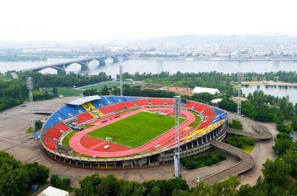
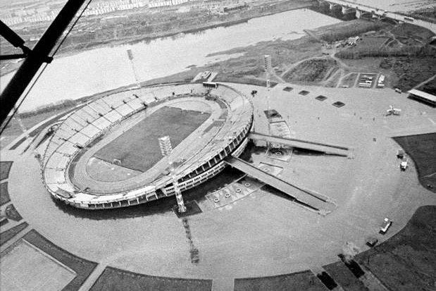
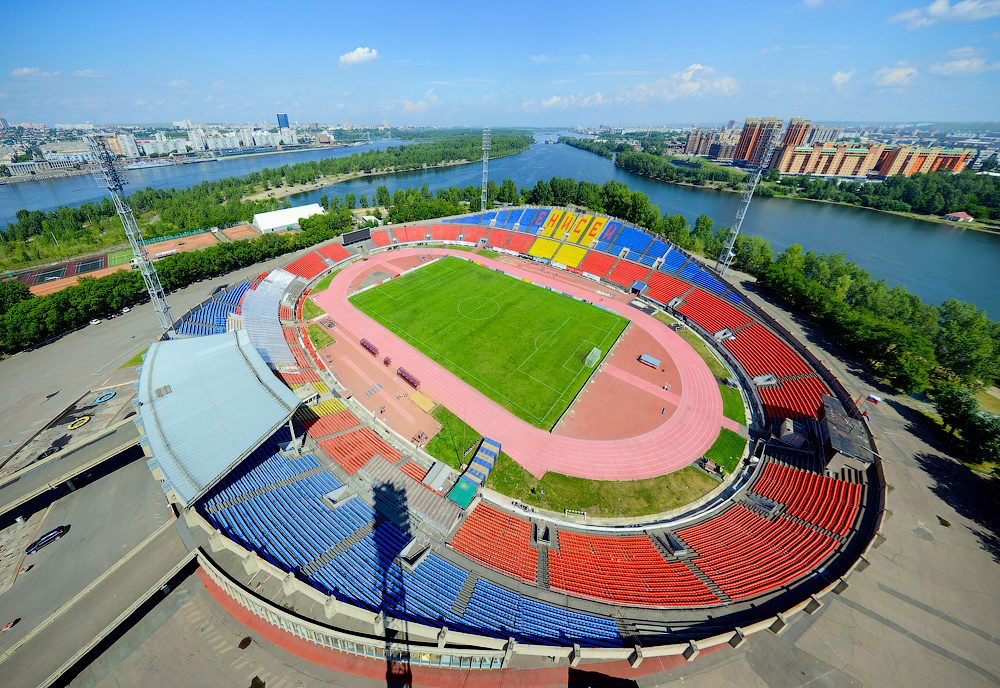
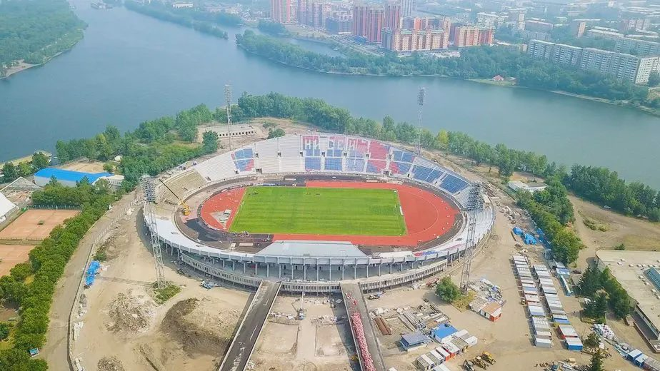

Открыт 29 октября 1967 года. Объект культурного наследия регионального значения, домашняя арена ФК «Енисей». Посмотрите ролик о будущем стадиона, узнайте его историю и ответьте на четыре вопроса опроса — ваш голос важен.
Стадион спроектирован в 1962–1965 годах в институте «Красноярскгражданпроект» под руководством главного архитектора Виталия Владимировича Орехова. Над проектом работал специально созданный сектор из 160 архитекторов, инженеров и техников. Город настоял на индивидуальном проекте вместо типового — и не прогадал.
Строительство началось 6 июня 1965 года. Генподрядчиком выступил Мостоотряд № 7, только что закончивший Коммунальный мост. Летом 1966 года площадку полностью затопило наводнением, но график не сорвался: стадион возвели всего за два с половиной года.
Силуэт стадиона задуман как ладья сибирских первопроходцев с вёслами: в плавных контурах чаши читаются горы и гладь Енисея. «Красноярская ладья» и «летящая чаша» — так писала о нём пресса. В 1968 году стадион отмечен премией Ленинского комсомола и признан одним из лучших сооружений советской архитектуры, в 1969-м проект получил диплом I степени Всесоюзного конкурса молодых архитекторов и был выдвинут на Государственную премию СССР.
Инженерная смелость объекта — в деталях: полную чашу зрители покидали за 7 минут благодаря наклонным пешеходным эстакадам и галерейной системе эвакуации, а первое табло красноярцы собрали самостоятельно — импортный экран стоил как полстадиона.


Искусственный газон с подогревом, 105 × 68 м. Матчи идут и в межсезонье, при отрицательных температурах.
400-метровые беговые дорожки, сектора для прыжков в длину и высоту, с шестом и метаний.
Индивидуальные кресла, в том числе сектора для зрителей с ограниченными возможностями. Трибуны открытые, без навеса — одна из причин будущей модернизации.
Встроенные помещения 1967–1969 годов сегодня занимают спортивные школы, в том числе Красноярский колледж олимпийского резерва.

Рекорд посещаемости, не побитый до сих пор: 35 000 зрителей на матче «Рассвет» — «Энергетик» (Душанбе). После игр тех лет на полчаса перекрывали Коммунальный мост, чтобы болельщики разошлись.
Первый в истории российского регби еврокубковый матч: «Енисей-СТМ» принимал ирландский «Коннахт» в Европейском кубке вызова.
«Енисей» обыграл действующего чемпиона страны ЦСКА со счётом 2:1 при полном стадионе — 16 тысяч зрителей, максимально допустимая заполняемость на тот момент.
На время зимней Универсиады на стадионе работал главный пресс-центр Игр. Здесь также играют регбийные клубы «Красный Яр» и «Енисей-СТМ».
Концепция модернизации предполагает разворот футбольного поля на 90° внутри исторического овала, новые трибуны на 25 000 зрителей по стандартам FIFA и UEFA и раздвижное покрытие. Силуэт «летящей чаши» сохраняется. Насколько глубокая модернизация нужна стадиону — решать в том числе горожанам. Ответьте на четыре коротких вопроса.
Голосование тайное: итоги участникам не показываются, результаты будут опубликованы после завершения опроса. Один голос с одного устройства.
Голосование тайное: промежуточные итоги участникам не показываются. Результаты опубликуем после завершения опроса.